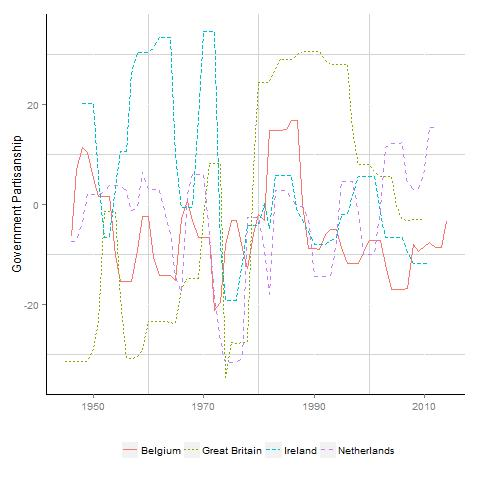

Woldendorp, Keman and Budge (2000) Party Government data set updated through 2014:
This page provides the various data sets, supporting materials and Stata files required for creating the governments and ministers data sets in a variety of units of analysis. Please cite the following: Katsunori Seki and Laron K. Williams, 2014. "Updating the Party Government Data Set", Electoral Studies.
Seki-Williams Ministers Dataset (Version 2.0): Detailed ministry data (with begining and ending tenure dates for individual ministers) from the early-1990s through 2014.
Seki-Williams Annual Government Partisanship: Annual government partisanship (both with MARPOR data and complexion of government [CPG] variables) for 37 democracies in the post-World War II period through 2014 (see codebook below).
Annual Government Partisanship (Manifesto Data) for Four European Democracies

Stata files:
If the Seki-Williams Annual Government Partisanship dataset is not what you need, then you can modify temporal dimension (i.e., quarterly or monthly), change the unit of analysis to government-party, or create different government partisanship variables, then use the following Stata do file:
Seki-Williams Government Partisanship: Stata do file that uses the Manifesto Project Database (e.g., left-right position, dove/hawk position, etc) to produce partisanship data (based on the prime minister's position and the government's position weighted by seats) at a variety of units of analysis (annual, quarterly, monthly or daily). NOTE: This produces a data set with the government/time period as the unit of analysis, meaning that there will be multiple observations for the time periods where a government change occurs. For example, in a government/year data set, there will be multiple observations for the year of an election. Also, this dataset uses the latest update of the manifesto data (Update 2016a), so make sure that you download it from the link below and save it in the working directory.